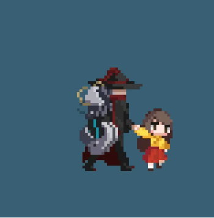
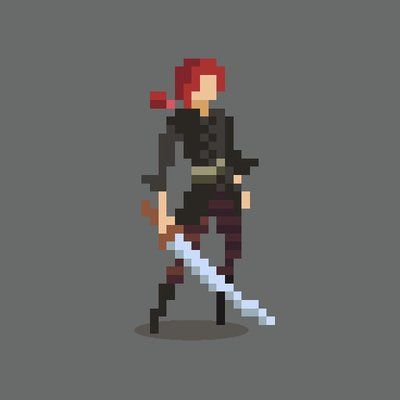
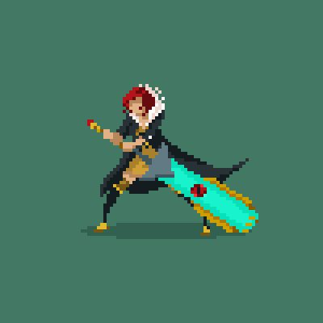
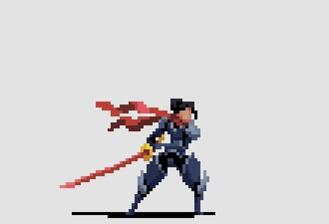
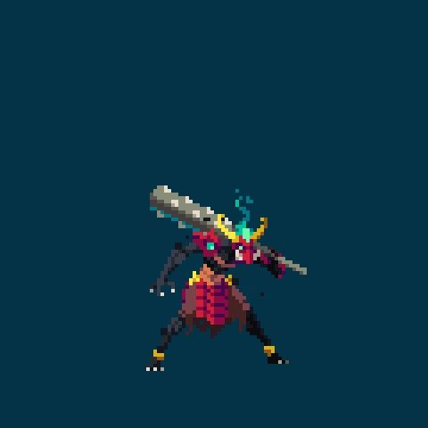
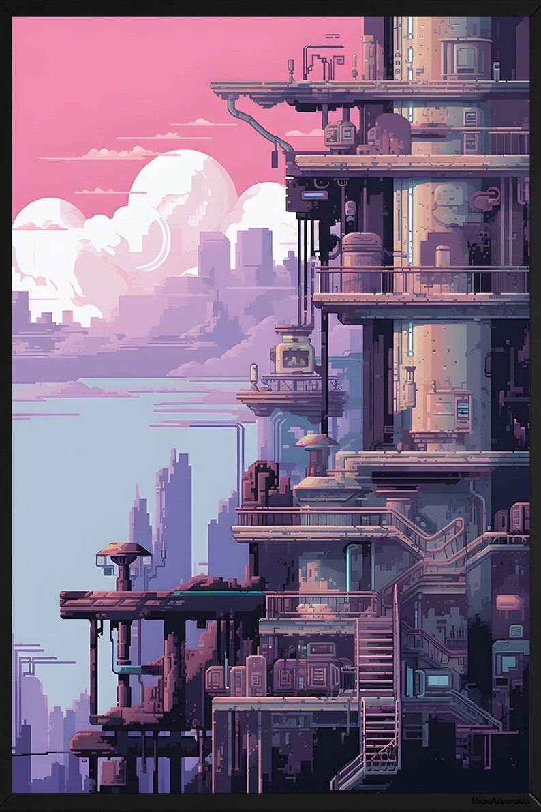
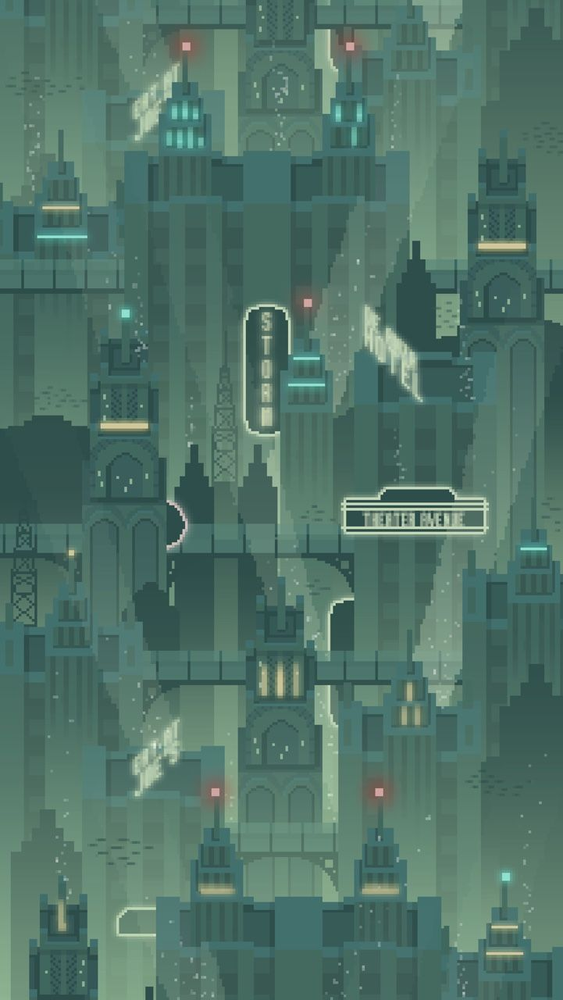
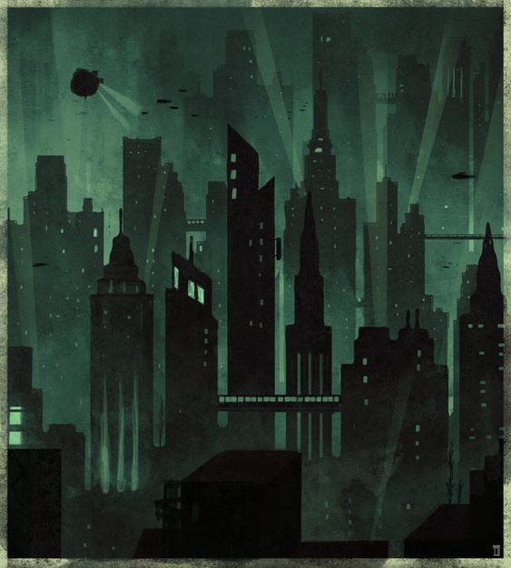
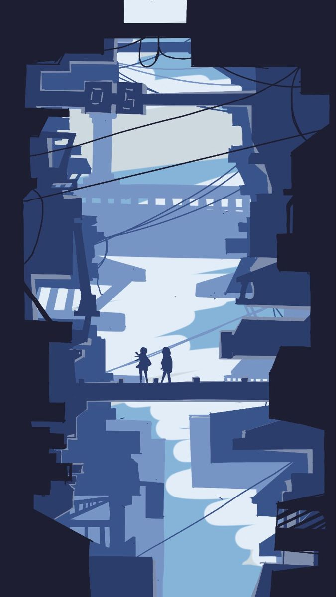
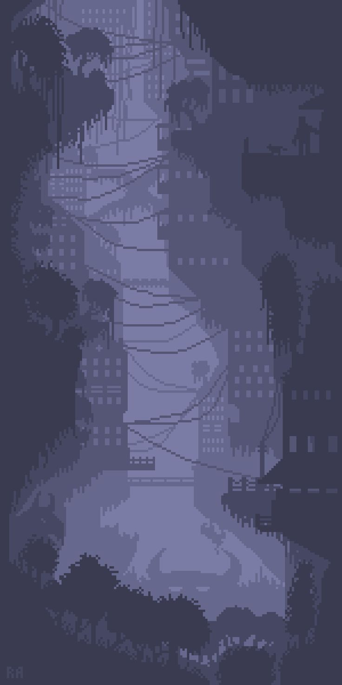

사용자가 제공한 캐릭터 5장과 배경 5장. 이미지에서 관찰한 특징과 우리 게임에 적용할 판단을 함께 정리했습니다.
원본 이미지를 그대로 표시합니다. 이미지를 누르면 큰 원본을 볼 수 있습니다. 이 보드는 레퍼런스 검토 자료이며 새 게임 아트 시안은 아닙니다.

큰 성인의 몸과 어깨 장비가 먼저 읽힙니다. 장비·외투를 큰 형태로 묶는 방식을 참고합니다.

얼굴·몸통·다리를 적은 면으로 구분합니다. 작은 크기에서도 팔다리와 장비를 먼저 읽게 합니다.

큰 무기와 옷자락이 동작 방향을 만듭니다. 발광 대비는 전투 상태 표시와 균형을 맞춥니다.

발의 지지와 관절의 굽힘이 선명합니다. 조준·반동을 설계할 때 바닥과 몸의 관계를 참고합니다.

큰 장비와 작은 강조색이 시선을 모읍니다. 총과 탄약팩의 비대칭을 설계할 때 참고합니다.

배관·계단·통로가 실제 쓰이던 도시를 만듭니다. 밝은 분홍색은 주 분위기와 구분합니다.

차가운 주색, 반복되는 규모, 제한된 불빛이 중요합니다. 전투 대상 뒤의 세부 밀도는 줄입니다.

탐조등과 수직 실루엣의 압박감을 참고합니다. 회화 질감은 도트 규격으로 그대로 옮기지 않습니다.

작은 사람과 거대한 틈이 규모를 만듭니다. 전투에서는 배우의 판독 크기를 유지하며 원경에 적용합니다.

전경·원경 명암 분리와 방치된 식생을 참고합니다. 가로 전투에 맞는 발판과 구도로 다시 구성합니다.